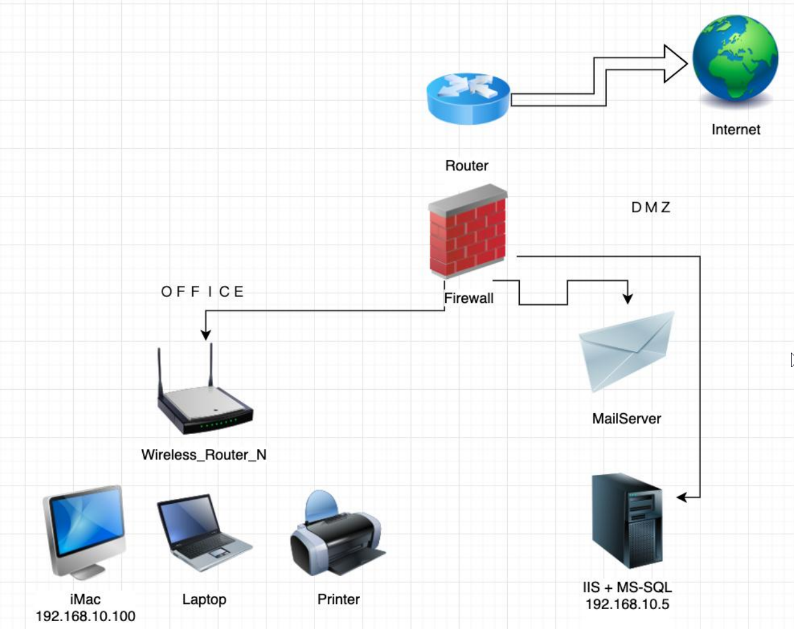
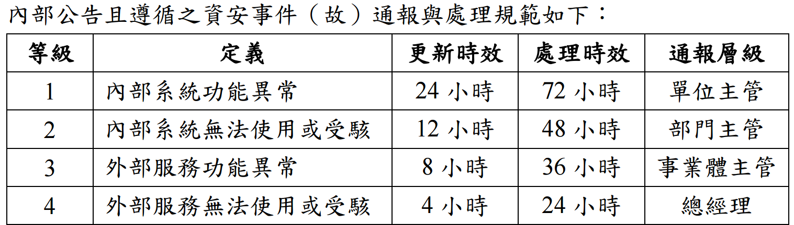

某台灣公司, 業務市場及銷售據點分布在臺、美兩地, 在建置資安系統時, 應優先考量附圖哪些法規事項?
1. 歐盟支付服務指令第 2 版 (The Second Payment Services Directive, PSD2)
2. 臺灣-資通安全管理法
3. 美國-CCPA (California Consumer Privacy Act)
4. 臺灣-營業秘密法
5. 香港-CFI (Cybersecurity Fortification Initiative)
公司營運地點在台灣和美國，應優先考量這兩地的相關法規。
1. PSD2 是歐盟的法規，與此公司營運地點無直接關係。
2. 資通安全管理法是台灣規範公務機關和特定非公務機關的法規。如果該公司屬於受規範對象（例如關鍵基礎設施提供者），則必須考量。即使不直接適用，其管理精神也可參考。
3. CCPA 是美國加州的消費者隱私法案。如果公司在美國的業務涉及加州居民，則必須考量。
4. 營業秘密法是台灣保護商業機密的法規，任何在台營運的公司都應考量，尤其在建置資安系統以保護內部資訊時。
5. CFI 是香港金融管理局針對認可機構的網路設防計畫，與此公司營運地點無直接關係。
因此，應優先考量的法規是與營運地點台灣和美國直接相關的 2、3、4。選項 (C) 234 符合。
關於資安工程師定期需要執行的資安維運任務, 下列何者「不」正確?
資安維運的常見例行任務：
(A) 定期執行資料備份，並定期演練還原程序以確保備份有效性，是營運持續和災難復原的基礎工作。
(B) 檢視防毒系統的報告（可能是每日、每週或每月），了解偵測到的威脅、更新狀況等，是端點安全監控的一部分。
(C) 定期進行滲透測試或弱點掃描（頻率依風險等級而定，半年或一年是常見週期），以主動發現系統弱點。
(D) 資安維運的報告對象通常是直屬主管、資訊部門主管、資安長 (CISO) 或相關管理階層，不直接向「會計主任」報告資安維運情況。會計可能關心與財務相關的內控或舞弊風險，但例行維運報告對象通常不是會計主任。
因此，「不」正確的任務是 (D)。
若要設定防火牆內對外的連線, 僅開放對外的服務及網頁瀏覽, 下列敘述何者正確?
設定
防火牆規則以允許內部網路
對外進行網頁瀏覽和使用特定服務：
- 網頁瀏覽主要使用 HTTP（端口 TCP 80）和 HTTPS（端口 TCP 443）。
- 對外服務則需根據具體服務開放相應端口（例如 DNS 使用 UDP/TCP 53，SMTP 使用 TCP 25 等）。
- 防火牆規則應遵循最小開放原則，僅允許必要的流量。
(A) `Allow all`
允許所有對外連線，過於寬鬆，
不安全。
(B) 端口
22 是
SSH 服務的預設端口，
不是 HTTP。
(C) 允許
HTTPS (端口
443)
是允許安全網頁瀏覽的
必要規則。
(D) 端口
25 是
SMTP（郵件傳輸）服務的預設端口，
與網頁瀏覽無關。
考慮到現代網頁瀏覽
主要使用 HTTPS，選項 (C) 是允許網頁瀏覽的
基本且必要的正確設定。雖然可能還需允許 HTTP (80) 和 DNS (53)，但在選項中 (C) 是最直接相關且正確的。
某公司在每週星期日凌晨 1 點執行完整備份 (Full Backup), 每日凌晨 1 點執行增量備份 (Incremental Backup), 每日備份資料分存放於不同磁帶。若此系統在星期三的下午 2 點發生嚴重損毀 (Crash), 資訊人員執行資料回復, 需使用多少個磁帶的資料?
恢復流程分析：
- 事件發生時間：星期三下午 2 點。
- 備份策略：
- 每週日凌晨 1 點：完整備份 (Full)。
- 每天（週一至週六）凌晨 1 點：增量備份 (Incremental)。
增量備份只備份自
上一次任何類型備份（完整或增量）以來
有變動的資料。
要恢復到星期三下午 2 點前的狀態，需要：
- 恢復最近一次的完整備份：即上週日凌晨 1 點的完整備份磁帶。(需要 1 個磁帶)
- 依序恢復自該次完整備份之後的所有增量備份，直到事件發生前：
- 恢復週一凌晨 1 點的增量備份磁帶。(第 2 個磁帶)
- 恢復週二凌晨 1 點的增量備份磁帶。(第 3 個磁帶)
- 恢復週三凌晨 1 點的增量備份磁帶。(第 4 個磁帶)
總共需要使用 1 (Full) + 3 (Incremental) =
4 個磁帶。
某公司新網頁資訊系統上線, 內含客戶相關資料, 經資安風險分析, 有帳號暴力破解風險, 再經後續的安全測試, 發現帳戶登錄機制可容許一直重複嘗試登入, 關於上述狀況, 下列何者作法最「不」適當?
B
設定密碼政策, 設定的密碼至少需有 12 個字元
C
設定帳戶在嘗試失敗時, 寄送 eMail 由郵件通知
D
設定帳戶連線時, 強制使用 Https 安全連線
針對帳號暴力破解（重複嘗試密碼）風險的防護措施：
(A) 帳戶鎖定機制：在連續嘗試登入失敗達到一定次數後，將該帳戶暫時鎖定一段時間（或需要管理員解鎖），可以有效延緩或阻止暴力破解。
(B) 複雜密碼政策：要求使用長度足夠、組合複雜的密碼，可以增加暴力破解猜中密碼的難度。
(C) 登入失敗通知：當帳戶登入失敗時，透過郵件或其他方式通知帳戶擁有者，可以讓使用者及早意識到其帳戶可能正遭受攻擊。
(D) 強制使用 Https：Https 保護的是密碼在傳輸過程中的機密性，防止被竊聽。它無法阻止攻擊者重複提交登入請求來猜測密碼。
因此，對於防範「重複嘗試登入」這種暴力破解行為，強制使用 Https 是最「不」直接相關、效果最差的措施。
某公司為網路電信商, 其多年前研發的即時通軟體非常受歡迎, 然而在面對歐盟通用資料保護規則 (EU General Data Protection Regulation, GDPR) 時, 內部評估發現其現有系統架構無法符合 GDPR 的規範, 且系統修改費用驚人, 管理層最後決定停止歐洲的市場業務, 關於上述狀況, 屬於下列何種風險處理?
該公司因為無法符合 GDPR 規範且修改成本過高，決定停止在歐洲的業務。
風險規避 (Risk Avoidance) 指的是決定不進行或停止會導致風險的活動，以完全避免該風險。
該公司的決策正是停止了會帶來 GDPR 合規風險的歐洲業務活動，這完全符合風險規避的定義。
(A) 風險降低是採取措施減少風險。
(B) 風險接受是容忍風險存在。
(D) 風險轉移是將風險轉嫁給第三方。
因此，該處理方式屬於 (C) 風險規避。
進行網路架構設計時, 下列敘述何者「不」正確?
C
採取 HA (High Availability) 機制需要多一台門禁系統
網路架構設計與相關考量：
(A) 為開發和測試環境建立獨立的區域，與生產環境隔離，是防止測試活動影響生產、保護生產資料和源碼的基本安全實踐。
(B) 集中記錄來自各種設備和系統的日誌 (Log) 和警報 (Alert) 到 Log Server 或 SIEM，是進行安全監控和事件分析的基礎。
(C) HA (高可用性) 機制是針對IT 系統（如伺服器、網路設備、應用程式）的冗餘設計，以確保在單點故障時服務能持續。門禁系統屬於實體安全範疇。<兩者沒有直接關聯。實現 HA 不需要額外的門禁系統。
(D) 備份機制是確保資料可恢復性的關鍵。<而容量規劃（包括儲存容量、網路頻寬、處理能力）對於確保系統效能和可用性至關重要。兩者都是架構設計時需要考慮的因素。
因此，「不」正確的敘述是 (C)。
關於資訊安全模型 (Security Models) 中的強制存取控制 (Mandatory Access Control, MAC), 下列敘述何者「不」正確?
A
依據事前定義 (Pre-defined) 主體 (Subject) 的安全等級和被存取物件 (Object) 機敏等級來決定是否可以存取
B
安全強度較自主存取控制 (Discretionary Access Control, DAC) 高
C
傳統的 Unix 系統使用者 (Users)、群組 (Groups) 和讀-寫-執行 (Read-Write-Execute) 管控, 即為 MAC 的一種實作
D
安全政策 (Policy) 由安全政策員 (Security policy administrator) 集中管控
強制存取控制 (MAC) 的特性：
(A) MAC 的核心機制就是基於系統管理員預先定義的安全標籤（等級或類別），比較主體（如使用者、進程）和客體（如檔案、資源）的標籤，根據系統強制的規則（如讀下寫上 - BLP 模型）來決定存取權限。正確。
(B) 由於 MAC 的強制性和集中管理特性，不易被使用者意外或故意地錯誤配置，通常認為其安全強度高於使用者可自主設定權限的 DAC。正確。
(C) 傳統 Unix 的 `rwx` 權限是典型的 DAC 模型，資源擁有者可以修改權限。這不是 MAC 的實作。實現 MAC 的系統有如 SELinux 或 AppArmor。錯誤。
(D) MAC 的安全策略（標籤分配、存取規則）是由系統管理員或安全管理員集中設定和強制執行的，普通使用者無法更改。正確。
因此，「不」正確的敘述是 (C)。
下列何者可被用來確認資料的完整性 (Integrity)?
確保資料完整性的機制通常使用密碼雜湊函數。
(A) SHA-512 (Secure Hash Algorithm 512-bit) 是一種密碼雜湊函數，可以產生固定長度的雜湊值，用於驗證資料完整性。
(B) 3DES 是對稱加密演算法。
(C) RC4 是對稱流加密演算法。
(D) EC-ElGamal 是基於橢圓曲線的 ElGamal 非對稱加密演算法。
因此，可用來確認資料完整性的是 (A) SHA-512。
某公司在一次例行檢查中, 資安管理人員發現一位員工正試圖使用透過手機網路連至外部網路下載軟體至其工作用筆記型電腦, 此作法等於繞過公司防火牆, 該員工解釋是為了安裝部門專案使用的 X 軟體, 關於上述狀況, 下列何種措施應優先進行?
A
重新設定公司防火牆規則讓 X 軟體可以下載並安裝
B
安裝網路型入侵偵測系統進行監控, 提早發現類似不當行為
員工試圖繞過公司防火牆安裝軟體，這是一個明顯違反資安規定的行為。
(A) 在未經評估該軟體安全性及必要性之前，不應直接修改防火牆規則允許下載。
(B) 安裝 IDS 是長期的安全監控措施，無法解決當前已發生的違規行為。
(C) 該員工的行為（繞過防火牆下載安裝軟體）已違反資安規範。應立即制止該行為，並依規範移除未經授權安裝的軟體，這是符合資安規範的處理方式。
(D) 雖然事後可能需要了解員工的需求（為什麼需要這個軟體），但當下應優先處理違規行為本身，阻止潛在風險（安裝的軟體可能是惡意的或有漏洞）。
因此，應優先進行的措施是 (C)。
某公司在員工個人電腦登入後會強制跳出提醒訊息:「請遵守本公司資訊安全規範, 避免機敏資料外洩」, 此提醒屬於下列何種控制措施?
A
管理的 (Administrative)、威嚇性 (Deterrent)
B
管理的 (Administrative)、預防性 (Preventive)
C
技術的 (Technical)、威嚇性 (Deterrent)
D
技術的 (Technical)、預防性 (Preventive)
分析控制措施的類型：
- **管理性/行政性 (Administrative):** 透過政策、程序、標準、指引、規範、訓練等方式來管理安全。
- **技術性/邏輯性 (Technical/Logical):** 透過軟硬體機制來實現控制（如防火牆、加密、存取控制列表）。
- **實體性 (Physical):** 保護物理環境和設施（如門鎖、監視器、滅火器）。
分析控制措施的目的：
- **預防性 (Preventive):** 阻止事件發生。
- **偵測性 (Detective):** 發現已發生或正在發生的事件。
- **矯正性 (Corrective):** 修復事件造成的損害或恢復正常。
- **威嚇性 (Deterrent):** 嚇阻攻擊者不要嘗試攻擊（例如警告標語、處罰規定）。
- **補償性 (Compensating):** 在主要控制措施無法實施時，提供替代的保護。
跳出提醒訊息「請遵守...規範，避免...外洩」：
- 這是一種宣導規範的方式，屬於管理性控制。
- 其目的是提醒員工注意規範，警告他們不要違規，帶有嚇阻的意味。
因此，此措施屬於 (A) 管理的、威嚇性。
如附圖所示, 關於營運持續管理系統 (Business Continuity Management System, BCMS) 的執行項目排序, 下列何者較正確?
1. 建立營運持續策略 (Business Continuity Strategy, BCS)
2. 撰寫緊急應變計畫 (Emergency Plan)
3. 撰寫營運持續計畫 (Business Continuity Planning, BCP)
4. 營運持續計畫演練 (Business Continuity Planning Exercise)
5. 執行營運衝擊分析 (Business Impact Analysis, BIA)
營運持續管理 (
BCM) 的流程通常遵循
PDCA (Plan-Do-Check-Act) 循環，其中規劃階段 (
Plan) 的大致順序為：
- **了解組織 (Understanding the organization):** 包含業務目標、利害關係方需求等。
- **業務衝擊分析 (Business Impact Analysis, BIA):** 識別關鍵業務流程，評估中斷影響，確定恢復目標 (RTO, RPO)。(5)
- **風險評鑑 (Risk Assessment):** 識別可能導致中斷的風險。
- **營運持續策略 (Business Continuity Strategy):** 根據 BIA 和風險評鑑結果，決定採取何種恢復策略（例如，備援方式、資源配置）。(1)
- **建立與實施 BCM 回應程序:**
- 緊急應變計畫 (Emergency Response Plan): 應對初期緊急狀況（如人員疏散、生命安全）。(2)
- 營運持續計畫 (BCP): 描述如何在中斷期間維持關鍵業務運作。
- 災難復原計畫 (DRP): 描述如何恢復 IT 系統。(包含在 3 中)
- **演練與測試 (Exercising and Testing):** 定期演練計畫以確保其有效性。(4)
根據這個邏輯，排序應為 5 -> 1 -> (2, 3) -> 4。選項 (B) 5->1->2->3->4 最符合這個流程順序（將緊急應變和營運持續計畫視為策略確定後的具體計畫制定）。
在進行營運衝擊分析 (Business Impact Analysis, BIA) 時, 下列三項評估的先後順序為何? 1.產品與服務 (Products and services)、2.流程 (Processes)、3.活動 (Activities)
BIA 的分析過程通常是由上而下的邏輯：
1. 首先識別組織提供的關鍵產品與服務 (1)。這是組織存在的根本目的。
2. 然後分析支持這些產品與服務所必需的關鍵業務流程 (2)。
3. 接著分解每個關鍵流程，識別構成這些流程的具體作業活動 (3)。
4. 最後分析執行這些活動所依賴的資源（如人員、系統、設備、供應商等）。
評估中斷對每個層級的影響，並確定恢復時間目標。
因此，評估的先後順序是 產品與服務 -> 流程 -> 活動，即 1 -> 2 -> 3。
關於縱深防禦 (Defense in Depth), 下列敘述何者「不」正確?
A
縱深防禦又稱為階層式防禦 (Layered Defense) 或洋蔥式防禦 (Onion Defense)
B
縱深防禦對資訊資產套用多層安全防護, 若部分防護失效仍可透過其餘機制降低受駭風險
C
縱深防禦僅能應用於實體控制之情境以發揮最大效益 (如: IDC 資料中心)
D
透過「網路存取控制 > 伺服器存取控制 > 應用程式存取控制 > 資料存取控制」此四層架構, 即可稱為縱深防禦之存取控制模式
縱深防禦：
(A) 這些都是縱深防禦的別稱，強調其層層防護的特性。正確。
(B) 描述了縱深防禦的核心理念：多層防護提供冗餘，單點失效不至於導致全盤崩潰。正確。
(C) 縱深防禦是一個廣泛的概念，可以應用於所有安全層面，包括實體控制、技術控制和管理控制。<例如，網路分段、多因子認證、加密、防毒、入侵偵測、安全意識訓練等都是縱深防禦的不同層面。將其侷限於實體控制是錯誤的。
(D) 描述了一個在存取控制方面實現縱深防禦的多層次架構範例。正確。
因此，「不」正確的敘述是 (C)。
關於網站應用程式防護, 下列敘述何者正確?
A
為有效降低網站應用程式受駭風險, 原始碼檢測不可於程式開發過程中執行, 待開發完成後再一次性執行以達最大效益
B
網頁應用程式防火牆 (Web Application Firewall, WAF) 可有效避免遭受駭客攻擊, 且若啟用特徵碼定期更新機制, 則受駭風險已降至最低, 網站應用程式之安全性測試便可忽略
C
網站應用程式所使用之元件若發現弱點, 透過網頁應用程式防火牆 (Web Application Firewall, WAF) 套用虛擬修補 (Virtual patching) 能有效阻擋攻擊, 則不需再對該元件進行修復
D
網站應用程式應定期執行安全檢測 (如: 原碼檢測、弱點掃描、滲透測試), 並對檢出之安全弱點進行修復, 若無法修復則需實施補償性控制措施來降低安全風險
(A) 錯誤。原始碼檢測 (SAST) 應盡早在開發生命週期中（Shift-Left）持續進行，以便及早發現並修復問題，成本最低，效益最高。一次性執行並非最佳實踐。
(B) 錯誤。WAF 是重要的防禦層，但不能完全取代應用程式自身的安全性測試。WAF 可能被繞過，且無法防禦所有類型的漏洞（如商業邏輯漏洞）。安全性測試仍然必要。
(C) 錯誤。虛擬修補 (Virtual Patching) 是一種臨時性或補償性措施，用於在無法立即修補底層漏洞時提供保護。但它並未真正修復元件的漏洞。<理想情況下，應盡快修復元件本身，以根除風險。
(D) 正確。這是安全開發生命週期 (SSDLC) 和持續安全維護的標準做法。定期透過各種方式（SAST, DAST, 滲透測試）檢測弱點，並優先修補。若無法修補（例如使用停止支援的第三方元件），則必須實施補償性控制（如 WAF 規則、加強監控）來降低殘餘風險。
某公司從事國際型科技大廠組裝代工業務, 在合作業務上, 嚴禁將未上市產品資訊外洩, 包含: 未上市產品間諜照、設計圖...等, 相關資訊檔案讀取使用僅限制公司少數高階技術人員可以讀取, 不能外洩到公司以外其他地方使用。關於上述狀況, 下列風險管理敘述何者正確? (複選)
A
公司與員工間簽屬相關保密協定與同意限制規範, 並進行必要技術管制手段, 如: 手機必須放置在公司設定手機電腦保管區、嚴禁拍照裝置與私人電腦攜入公司廠區
B
對公司電腦, 限制外接儲存裝置的存取、電腦畫面擷取、與工具軟體使用限制, 以降低公司機密資料外洩風險
C
公司成立相對應資安防護措施, 如: 防止駭客入侵竊取、電子郵件的附件過濾、對公司內外流量封包監控
D
公司不應限制禁止員工上網, 這是員工午休時基本人權權利
此風險情境涉及保護高度機密的商業資訊（客戶未上市產品資訊），防止內部人員洩密或外部攻擊竊取。
(A) 正確。管理措施（保密協定）和實體/技術管制（限制手機、拍照裝置）是防止資料外洩的必要手段。
(B) 正確。<限制資料傳輸管道（USB）、防止螢幕側錄（畫面擷取）、控管可能被濫用的工具軟體，都是常見的端點資料外洩防護 (DLP) 措施。
(C) 正確。除了防止內部洩密，也需要防禦外部威脅（駭客入侵）、監控資料流出管道（郵件附件過濾、網路流量監控）。
(D) 錯誤。基於保護商業機密和防止惡意軟體引入的考量，公司有權在工作場所和使用公司設備時限制員工的上網行為（例如禁止訪問特定網站、限制下載）。這不必然侵犯基本人權，尤其是在涉及高度機密資訊的環境下，安全需求優先級更高。
*註：本題為複選題，正確選項為 A, B, C。*
下列何者「不」是用來在建置資訊安全管理系統時, 透過量化資安目標來協助組織瞭解是否落實所訂定之資安政策的做法? (複選)
題目要求找出「不」是量化資安目標的選項。量化目標是指可以具體測量並評估達成程度的目標。
(A) 「全面導入資安管理系統」是一個行動或專案，而不是一個可持續測量的量化目標。如何定義「全面」？導入本身不代表落實政策。不是量化目標。
(B) 「檔案伺服器每年中毒次數低於 2 次」是一個清晰、可測量、有時限的目標。可以透過事件記錄來追蹤達成率。是量化目標。
(C) 「密碼設定 12 碼, 文、數字與符號混合」描述的是一項控制措施或政策要求，而不是一個衡量政策整體落實成效的量化目標。雖然可以檢查密碼設定是否符合要求，但它本身更像是一個手段而非結果目標。不是典型的量化資安目標（更像是控制實施的指標）。
(D) 「全面導入垃圾郵件過濾系統」同 (A)，是一個行動或專案，不是量化目標。導入後的成效（如垃圾郵件攔截率）才是量化目標。不是量化目標。
因此，不是量化目標的選項是 (A)、(C)、(D)。
*註：本題為複選題，正確選項為 A, C, D。*
密碼學 (Cryptography) 除了機密性 (Confidentiality) 之外, 還可以保護下列何者特性? (複選)
密碼學技術提供的安全特性：
- 機密性 (Confidentiality): 主要透過加密（對稱或非對稱）來實現，確保只有授權者能讀取資訊。
- 完整性 (Integrity): 透過雜湊函數 (Hash Function) 或訊息鑑別碼 (MAC) 來實現，確保資料在傳輸或儲存過程中未被竄改。 (A)
- 可用性 (Availability): 密碼學本身通常不直接提供可用性。可用性主要依賴系統架構、備援、負載平衡等。 (B)
- 不可否認性 (Non-Repudiation): 主要透過數位簽章（使用非對稱加密的私鑰簽署）來實現，證明訊息確實由某人發送且無法否認。 (C)
- 鑑別性 (Authenticity) / 身份驗證 (Authentication): 透過數位簽章、MAC 或基於密碼學的挑戰-回應協議來驗證訊息來源或使用者身份的真實性。(D)
因此，除了
機密性，
密碼學還可以保護 (A)
完整性、(C)
不可否認性、(D)
鑑別性。
*註：本題PDF標示答案為A, C, D。Page 5 OCR D選項為 Authenticity，非 Availability，在此修正。*
某公司正準備規劃其識別及存取管理 (Identity and Access Management) 機制, 下列何者是可選擇的存取控制類型? (複選)
A
強制存取控制 (Mandatory Access Control, MAC)
B
識別存取控制 (Identity-Based Access Control, IBAC)
C
規則基礎存取控制 (Rule-Based Access Control, RuBAC)
D
自主存取控制 (Discretionary Access Control, DAC)
常見的存取控制模型類型：
(A) 強制存取控制 (MAC): 基於安全標籤和系統強制策略，由管理員集中控制，使用者無法自行變更權限。是一種可選擇的類型。
(B) 識別存取控制 (IBAC): 這不是一個廣泛認可的標準存取控制模型術語。存取控制通常都基於某種形式的身份識別，但 IBAC 本身並不代表一種獨特的模型分類，相較於 MAC, DAC, RBAC, ABAC 等。
(C) 規則基礎存取控制 (RuBAC / RBAC - Role-Based): 基於預先定義的規則（如防火牆規則）或角色（Role-Based Access Control，通常縮寫為 RBAC）來授予權限。是一種可選擇的類型。
(D) 自主存取控制 (DAC): 資源的擁有者可以自行決定誰可以存取該資源以及授予何種權限（如 Unix 的 rwx 權限）。是一種可選擇的類型。
其他常見類型還有屬性基礎存取控制 (Attribute-Based Access Control, ABAC)。
因此，可選擇的存取控制類型包括 (A)、(C)、(D)。
*註：本題為複選題，正確選項為 A, C, D。*
下列哪些是進行營運衝擊分析 (Business Impact Analysis, BIA) 時需考量的因素? (複選)
C
商譽衝擊 (Reputational Impact)
營運衝擊分析 (BIA) 旨在評估業務流程中斷可能對組織造成的各種影響，以確定流程的關鍵性及恢復目標。常見的衝擊考量因素包括：
(A) 財務衝擊: 如收入損失、額外支出、罰款等。是核心考量因素。
(B) 政治衝擊: 通常不是 BIA 的直接考量因素，除非組織的業務與政治活動高度相關（如政府機構、遊說團體）。對一般企業而言較少考慮。
(C) 商譽衝擊: 如客戶信心下降、品牌形象受損、媒體負面報導等。是重要的考量因素，尤其對服務業或品牌導向企業。
(D) 法規衝擊: 如違反合約義務、未能履行法律或監管要求、遭受處罰等。是重要的考量因素，尤其在受監管行業。
其他還可能考慮營運衝擊（如生產力下降）、客戶衝擊（如服務中斷）、供應鏈衝擊等。
因此，需考量的因素包括 (A)、(C)、(D)。
*註：本題為複選題，正確選項為 A, C, D。*
【題組】某公司的
資安人員依據公司設備狀況規劃以下
網路架構設計圖：

(圖示包含 Internet, Router, Firewall, DMZ (MailServer, IIS+MS-SQL 192.168.10.5), OFFICE (Wireless_Router_N, iMac 192.168.10.100, Laptop, Printer))
根據上列資訊，請回答下列問題：
21. 題組背景描述如附圖。請問該
網路架構設計中, 存在下列哪些
問題? (複選)
分析圖示網路架構的問題：
(A) 問題。OFFICE 區的 iMac IP 位址是 192.168.10.100，DMZ 區的 IIS+MS-SQL 伺服器 IP 位址是 192.168.10.5。它們屬於同一個網段 (192.168.10.0/24)。DMZ 區應與內部OFFICE 區使用不同的、隔離的網段，以防止 DMZ 設備被攻陷後直接危及內部網路。
(B) 問題。圖中顯示 IIS (Web Server) 和 MS-SQL (Database Server) 安裝在同一台伺服器上 (192.168.10.5)。從安全角度看，Web 伺服器（通常暴露在較高風險的 DMZ）和資料庫伺服器（儲存敏感資料）應分開部署在不同的機器甚至不同的網段（多層式架構），以降低風險。
(C) 潛在問題。在 DMZ 自行架設郵件伺服器 (MailServer) 需要非常專業的安全配置和維護（防垃圾郵件、防病毒、防中繼、防漏洞攻擊）。若管理不當，很容易成為安全隱患或被濫用。相較於使用專業的雲端郵件服務，自架伺服器的安全挑戰通常更大，可能安全性不足。
(D) 不一定是問題，甚至可能引入風險。印表機的有線或無線連接方式取決於管理需求。使用無線分享雖然方便，但也可能增加被未授權訪問或攻擊的風險點，需要妥善設定安全機制。<這不是此架構的主要安全問題。
因此，存在的問題是 (A)、(B)、(C)。
*註：本題為複選題，PDF OCR Page 6 顯示答案為 A, B, C。*
【題組】背景描述如前圖。
22. 承上題, 若要進行網路架構改善, 可採取下列何種強化措施?
針對 Q21 發現的問題進行改善：
(A) 正確。解決 Q21-(B) 的問題。將Web伺服器 (IIS) 和資料庫伺服器 (MS-SQL) 分開部署，並且理想情況下，資料庫伺服器應放置在比 DMZ 更安全的內部網段，Web伺服器透過防火牆規則與之通訊（多層式架構）。區分在不同網段是重要的強化措施。
(B) 不一定是優先措施。增加 Mail Server 備援可以提高郵件服務的可用性，但不能解決 Q21-(A) 網段劃分不清或 Q21-(C) 自架郵件伺服器本身的安全性問題。
(C) 不相關。HA (高可用性) 是針對關鍵服務（如伺服器、網路設備）的，增加一台印表機不是 HA 的應用場景，也不能解決架構的主要安全問題。
(D) 不一定必要或有效。限制 Mac 上網可能影響員工工作，且是否需要限制取決於公司的安全政策，與圖中主要的伺服器區域劃分問題關聯不大。且如果需要連外，應透過防火牆控管。
因此，最直接且重要的強化措施是 (A)。
【題組】背景描述如前圖。
23. 承上題, 在此架構下, 下列何者「不」是定期需要執行的資安維運任務?
定期資安維運任務：
(A) 定期備份（例如，針對 MailServer, IIS+MS-SQL, 甚至重要的客戶端資料）和演練還原是非常重要的維運任務。
(B) 定期進行防毒掃描（在伺服器和客戶端）是必要的。頻率可能是每天、每週或每月，具體取決於政策，半年一次頻率偏低，但仍算定期任務。
(C) 資料備份的頻率取決於資料變動率和 RPO（復原點目標）。對於郵件、網站和資料庫等系統，每兩年才備份一次是完全不夠的，可能導致大量資料遺失。<備份應至少每天或每週進行。<這是「不」正確的任務描述。
(D) 除非該公司屬於資通安全管理法規範的特定對象，且發生了達到通報標準的資安事件，否則例行的維運任務通常不需要向外部主管機關報告。
因此，最不正確的描述是 (C)，備份頻率過低。
【題組】背景描述如前圖。
24. 若要設定防火牆內對外的連線, 僅開放對外的服務及網頁瀏覽, 下列何者正確?
設定內部網路（
OFFICE 區）對外連線規則，僅允許網頁瀏覽和必要服務：
- 網頁瀏覽需要允許 HTTP (TCP port 80) 和 HTTPS (TCP port 443) 的出站連線。
- 可能還需要允許 DNS (UDP/TCP port 53) 查詢。
- 防火牆規則應遵循預設拒絕，明確允許的原則。
(A) `Allow all`
過於寬鬆，不符合「僅開放」的要求。
(B) `Allow http port 80` 是允許
非加密網頁瀏覽的
必要規則之一。
(C) 端口 `1443`
不是標準的 HTTP 或 HTTPS 端口。（有時用作備用 HTTPS，但 443 才是標準）。
(D) `Deny smtp 125` 語法錯誤（端口應為 25），且這是一條
拒絕規則。題目要求的是
開放（允許）規則。
在選項中，(B) 是開放網頁瀏覽
所需的一條正確的允許規則。雖然通常還需要允許 HTTPS (443)，但 (B) 本身是正確的。
【題組】某公司為一跨國企業, 公司員工約 10,000 人, 所有員工皆配備一台筆記型電腦, 身為資安專家的你, 正在評估筆記型電腦的安全風險, 並對公司高層提出建議。
目前已搜集到以下資訊:
每台筆記型電腦價值: 30,000
筆記型電腦遺失, 價值將 100% 受損
每年遺失數量 10 台
同時, 資安專家已完成資料防護軟體評估, 以避免筆記型電腦遺失時對公司造成的損失, 產品生命週期為四年, 廠商報價如下:
全硬碟加密軟體: 500,000, 使用期間每年維護費用: 75,000
遠端資料清除工具: 100,000, 使用期間每年維護費用: 20,000
根據上列資訊，請回答下列問題：
25. 請問你正在進行的風險分析方法為下列何者?
A
定性風險分析 (Qualitative Risk Analysis)
B
定量風險分析 (Quantitative Risk Analysis)
C
協同風險分析 (Collaborative Risk Analysis)
D
風險分析矩陣 (Risk Analysis Matrix)
風險分析方法主要分為
定性和
定量兩種：
- 定性風險分析 (Qualitative): 使用描述性的詞語（如高、中、低）來評估風險的可能性和影響，通常基於經驗和判斷，不涉及具體的貨幣價值。常使用風險矩陣 (D) 作為工具。
- 定量風險分析 (Quantitative): 嘗試為風險分配具體的數值，特別是貨幣價值。它計算年度損失期望值 (ALE)、單次損失期望值 (SLE) 和年發生率 (ARO)。
題組中提供了
具體的數字：資產價值 (30,000)、損失百分比 (100%)、年發生次數 (10次)，以及控制措施的成本（初始費用和年維護費）。這些
數值化的資訊是用來進行
量化計算（例如計算
ALE 和評估控制措施的成本效益）的基礎。
(C)
協同風險分析不是標準的風險分析方法分類術語。
因此，這裡進行的是 (B)
定量風險分析。
【題組】背景描述如前。
26. 公司筆記型電腦的年度損失期望值 (Annualized Loss Expectancy) 為下列何者?
計算年度損失期望值 (ALE) 的公式為：
ALE = 單次損失期望值 (SLE) × 年發生率 (ARO)
首先計算 SLE：
SLE = 資產價值 (Asset Value, AV) × 暴露因子 (Exposure Factor, EF)
AV = 30,000 (每台筆電價值)
EF = 100% = 1 (遺失時價值完全損失)
SLE = 30,000 × 1 = 30,000 元 (每次遺失事件的預期損失)
接著計算 ALE：
ARO = 10 次/年 (每年遺失數量)
ALE = SLE × ARO = 30,000 × 10 = 300,000 元/年
因此，公司筆記型電腦遺失的年度損失期望值為 300,000 元。
【題組】背景描述如前。
27. 正在評估的資料防護軟體, 每年的年度花費為下列何者?
題目要求計算正在評估的兩種資料防護軟體（全硬碟加密 和 遠端清除）合併的「每年」年度花費。
計算年度花費時，需要考慮初始投資成本（需要攤提到每年）和每年的維護費用。
產品生命週期為 4 年。
1. 全硬碟加密軟體：
* 初始成本: 500,000
* 年維護費: 75,000
* 年攤提初始成本: 500,000 / 4 = 125,000 元/年
* 年總花費 = 年攤提 + 年維護費 = 125,000 + 75,000 = 200,000 元/年
2. 遠端資料清除工具：
* 初始成本: 100,000
* 年維護費: 20,000
* 年攤提初始成本: 100,000 / 4 = 25,000 元/年
* 年總花費 = 年攤提 + 年維護費 = 25,000 + 20,000 = 45,000 元/年
兩種軟體的合併年度總花費 = 200,000 + 45,000 = 245,000 元/年。
選項分析：
(A) 695,000 = 500,000 + 100,000 + 75,000 + 20,000 (未攤提初始成本，直接加總第一年費用)
(B) 980,000 = (500,000 + 75,000 * 4) + (100,000 + 20,000 * 4) (計算四年總花費)
(C) 300,000 (可能是 Q26 的 ALE)
(D) 245,000 (正確的年均花費)
【題組】背景描述如前。
28. 根據分析結果, 資安專家應對公司提出下列何種建議?
這是一個成本效益分析 (Cost-Benefit Analysis) 的決策問題。
1. 不採取措施的風險成本：ALE = 300,000 元/年 (來自 Q26)。
2. 採取控制措施（導入兩種資料防護軟體）的成本：年均花費 = 245,000 元/年 (來自 Q27)。
比較兩者：
控制措施的年成本 (245,000) 低於不採取措施的年預期損失 (ALE = 300,000)。
這表示導入這些資料防護軟體在經濟上是合理的，可以有效降低因筆電遺失導致的資料外洩風險（雖然題目只計算了硬體損失，但資料外洩的潛在損失可能更高，軟體價值在此體現）。
因此，資安專家應提出的建議是：
(A) 錯誤。費用 (245,000) 低於預期損失 (300,000)，並非過高。
(B) 正確。導入措施的成本小於預期損失，符合成本效益，應導入以降低風險（風險緩解）。
(C) 錯誤。提供的資料足以進行定量分析和決策。
(D) 錯誤。雖然遺失數量 (10台/年) 相對於總數 (10,000台) 比例不高，但ALE (300,000) 是一個不小的數目，且有成本效益更優的風險處理方案（導入軟體），因此接受風險不是最佳選擇。
【題組】為因應 2019 冠狀病毒疾病疫情, 中央防疫中心也提升至一級開設, 對此, 金管會表示, 國內銀行業也積極因應, 目前已有 13 家銀行採取異地辦公, A 銀行決定將資訊部門的系統管理人員及其代理人分別安排在不同的辦公地點辦公。
根據上列資訊，請回答下列問題：
29. 請問該異地辦公的規劃與營運持續管理有下列何種關聯?
A
與營運持續管理無關, 應屬於職業衛生安全管理 (Occupational Health and Safety Assessment Series, OHSAS) 的議題
B
與資料復原目標 (Recovery Point Objective, RPO) 的達成較有關
C
與復原目標時間 (Recovery Time Objective, RTO) 的達成較有關
異地辦公（或分散辦公）是一種營運持續策略，旨在降低因單一地點發生突發事件（如疫情、火災、停電）導致關鍵人員無法工作，進而造成業務中斷的風險。
(A) 錯誤。異地辦公直接關係到如何在災難或中斷情境下維持營運，是 BCM 的核心策略之一。雖然也涉及員工健康安全 (OHSAS)，但其主要目的是業務連續性。
(B) 錯誤。RPO（復原點目標）關乎可容忍的資料損失量，主要透過備份頻率來達成。異地辦公主要影響的是人員和流程的恢復速度。
(C) 正確。RTO（復原時間目標）是指業務流程必須在中斷後多久時間內恢復到可接受的運作水平。異地辦公確保即使主要辦公地點無法運作，關鍵人員仍可在備援地點繼續工作，從而縮短服務中斷時間，達成 RTO 目標。
(D) 部分正確但非核心關聯。雖然配合主管機關要求是一個觸發因素，但異地辦公的根本目的和在 BCM 中的作用是確保營運韌性，與 RTO 的達成直接相關。
【題組】背景描述如前。
30. 請問 A 銀行資訊部門關鍵成員異地辦公的相關程序、作法與規定, 應納入下列何種程序文件中較為合適?
A
事故管理計畫 (Incident Management Plan)
B
營運持續計畫 (Business Continuity Plan)
C
營運復原計畫 (Business Resumption Plan)
D
災害復原計畫 (Disaster Recovery Plan)
各類計畫的焦點：
- 事故管理計畫 (Incident Management Plan): 主要處理資訊安全事件（如駭客入侵、病毒感染）的偵測、應變、處理和學習過程。
- 營運持續計畫 (Business Continuity Plan, BCP): 描述如何在重大中斷事件（包括災難、疫情等）發生時，維持關鍵業務流程的持續運作或在可接受的時間內恢復。
- 營運復原計畫 (Business Resumption Plan): 通常被視為 BCP 的一部分或相似概念，側重於中斷後業務流程的恢復。
- 災害復原計畫 (Disaster Recovery Plan, DRP): 通常聚焦於 IT 系統和基礎設施在災難後的恢復，是 BCP 的一個重要子計畫。
異地辦公是為了應對可能影響主要辦公地點的
中斷事件（如疫情），確保
關鍵人員能夠繼續執行
關鍵業務流程（如系統管理）。這完全符合
BCP 的範疇。因此，
異地辦公的程序、作法與規定應納入 (B)
營運持續計畫中。
【題組】背景描述如前。
31. 關於 A 銀行異地辦公地點的考量及選擇, 下列敘述何者較「不」正確?
B
如系統發生異地中斷, 系統管理員可由遠端連線操控, 應可考量採居家辦公
C
可依營運衝擊分析後的流程或服務的重要性來決定哪些角色需要異地辦公
D
隨著資訊科技的進步, 異地辦公的選擇應著重在工作的執行, 而不是辦公室地點的選擇
考量異地辦公地點：
(A) 不正確。人員的異地辦公地點（Work Area Recovery Site）和系統的異地備援中心（Data Center Recovery Site）不必在同一地點。將兩者分開甚至可以進一步分散風險（避免單點故障同時影響人和系統）。異地辦公地點的選擇更側重於交通便利性、基礎設施、人員安全等因素。
(B) 正確。如果系統管理任務可以透過安全的遠端連線（如 VPN）完成，那麼居家辦公可以作為異地辦公的一種形式，提供更大的彈性和成本效益，尤其在疫情等情境下。
(C) 正確。BIA 的結果會識別出哪些是關鍵業務流程和支持這些流程的關鍵人員。組織應優先為這些關鍵角色規劃異地辦公方案。
(D) 正確。現代異地辦公的重點在於確保員工擁有必要的工具、連線和安全環境來執行其工作職責，無論他們身在何處（可能是另一個辦公室、居家、或其他地點），而不僅僅是找一個物理上的替代辦公室。
因此，較「不」正確的敘述是 (A)。
【題組】背景描述如前。
32. 除了異地辦公地點的選擇外, 下列何項亦可增加疫情發生時的營運持續能力?
增加疫情期間營運持續能力的措施，主要是確保關鍵職能能持續執行，即使原負責人員因故（如生病、隔離）無法工作。
(A) 接班人計畫 (Succession Planning): 主要針對長期的領導層或關鍵職位空缺，培養未來的接替人選。與應對短期、突發的疫情關聯較小。
(B) 代理人計畫 (Delegation of Authority / Acting Appointments): 預先指定並授權某人在原負責人缺席時，暫時代理其職務和權責。這對於確保疫情期間關鍵決策和作業不中斷非常重要。
(C) 工作輪休計畫: 輪休本身是正常排班，但在疫情期間，"輪班"（例如 A/B 組輪流上班或異地辦公）可以減少人員同時感染的風險，屬於一種風險降低措施，但核心在於有人可以接替工作。
(D) 員工進修計畫: 著重於提升員工長期的技能和知識，與應對當下的營運中斷無直接關係。
因此，最能直接增加疫情發生時營運持續能力（確保有人能接手工作）的是 (B) 代理人計畫。
【題組】近來有愈來愈多公司更積極擁抱新興科技, 期望透過更大量的科技應用, 提升公司整體營運能力, 也希望從中找到新的商機, 強化公司競爭力。A 公司為著名電商公司, 同時十分注重資訊安全, 去年已完成全公司 ISO/IEC 27001 導入與驗證, 今年為強化公司競爭力, 決議將公司主要電商網站由 IDC 機房移入雲端, 同時相關辦公自動化服務 (Office Automation, OA) 也積極使用雲端 Solution。
根據上列資訊，請回答下列問題：
33. 就 ISO/IEC 27001 而言, 若考量公司重要服務 (電商網站) 由地端移入雲端一事, 下列敘述何者較適當?
A
由於是將電商網站由 IDC 機房移入雲端, 整體系統功能未進行調整, 所以無須針對此一作業進行風險評估
B
由於是將電商網站由 IDC 機房移入雲端, 與 ISO 先前的驗證情況大不相同, 所以應於工作結束後立即進行 ISO/IEC 27001 重新驗證
C
電商網站由 IDC 機房移入雲端, 屬重大服務調整, 所以應針對此一作業進行風險評估
D
由於是將電商網站由 IDC 機房移入雲端, 雲端平台的安全性高, 所以無需重新評估該網站的資安防護機制
ISO/IEC 27001 強調風險管理和持續改善。將核心系統從地端遷移到雲端是一項重大的變更，會引入新的運作模式、技術架構、供應商關係以及風險。
(A) 錯誤。即使功能不變，底層架構和運作環境的改變（地端 vs 雲端）會帶來新的風險（如雲端配置錯誤、供應商風險、共享責任模型下的安全職責劃分等），因此必須進行風險評估。
(B) 錯誤。不一定需要「立即重新驗證」。但此重大變更必須納入 ISMS 的管理範圍，進行風險評估和變更管理，並在後續的內部稽核、管理審查和外部監督/重新驗證稽核中進行審查，確保 ISMS 仍然有效且涵蓋新的雲端環境。
(C) 正確。將核心電商網站遷移上雲是重大變更，涉及技術、流程、甚至可能影響業務連續性。根據 ISO/IEC 27001 的要求，組織應對影響資訊安全的變更進行評估和控制，因此必須針對此遷移作業進行風險評估。
(D) 錯誤。雲端平台本身可能提供某些安全功能，但整體安全性取決於客戶的配置和管理（共享責任模型）。客戶仍需負責應用程式層、資料、身份存取管理等的安全防護，並重新評估原有的資安防護機制在雲端環境下的適用性和有效性。不能假設雲端就等於絕對安全。
【題組】背景描述如前。
34. 因應資通系統使用雲服務, 資通系統開始面臨新的風險, 請問下列何種風險與資通系統在雲端環境的關聯度最高?
A
帳號劫持 (Account hijacking)
B
不安全的介面與 APIs (Insecure interfaces and APIs)
D
有限的雲端使用可見性 (Limited cloud usage visibility)
題目問的是在雲端環境下，哪種風險的關聯度最高，或者說更具雲端特性。
(A) 帳號劫持：在地端和雲端都可能發生，但雲端環境下管理介面和 API 的暴露可能增加此風險。
(B) 不安全的介面與 APIs：雲服務大量依賴 API 進行管理和整合，API 的安全性至關重要，是雲端特有的重要攻擊面。
(C) 資料外洩：在地端和雲端都可能發生，雲端環境下的錯誤配置（如公開的存儲桶）是常見原因。
(D) 有限的雲端使用可見性：由於雲端基礎設施由供應商管理，客戶對於底層設施和某些操作的可見性（Visibility）受到限制。這使得監控、稽核和事故應變變得更具挑戰性，是雲端環境普遍存在且關聯度非常高的一個特性風險。<客戶難以完全掌握雲端資源的使用情況和潛在的影子 IT（Shadow IT）。
雖然 A, B, C 都是雲端風險，但 D (有限的可見性) 更能體現從地端遷移到雲端後所面臨的根本性挑戰之一，它可能導致其他風險（如未被發現的錯誤配置、未經授權的存取）難以被察覺。因此，其關聯度最高。
【題組】背景描述如前。
35. A 公司某日收到上個月雲端平台的帳號, 發現帳單費用爆增, 經過清查後發現雲端平台存有不知名的挖礦程式正在執行, 導致雲端使用費大增, 請問下列何者最「不」可能是遭駭客植入挖礦程式的原因?
A
資通系統的識別及存取管理 (Identity and Access Management, IAM) 相關帳密或存取金鑰外洩
B
主機作業系統或資通系統具遠端程式碼執行 (Remote Code Execution, RCE) 漏洞
C
雲端所使用的系統映像檔受感染, 系統維護人員下載並執行不明來源的映像檔 (Docker Image)
D
雲端之電商網站具有安全的弱點, 遭駭客利用進行 Billion Laugh Attack 所導致
分析駭客植入挖礦程式的可能途徑：
(A) 可能原因。如果攻擊者獲取了具有足夠權限的 IAM 帳密或存取金鑰 (Access Key)，他們就可以登入雲端平台，創建或控制虛擬機/容器，並部署挖礦程式。
(B) 可能原因。如果雲端上的虛擬機或應用程式存在 RCE 漏洞，攻擊者可以利用該漏洞遠端執行任意程式碼，包括下載和執行挖礦程式。
(C) 可能原因。如果維護人員使用了來源不明或已被竄改的作業系統映像檔或容器映像檔 (Docker Image)，這些映像檔可能預先就被植入了挖礦程式或其他惡意軟體。
(D) 「不」可能原因。**Billion Laughs Attack** 是一種拒絕服務攻擊 (Denial of Service, DoS)，它利用 XML 實體擴展的特性，導致 XML 解析器消耗大量記憶體和 CPU 資源，最終耗盡系統資源而當機或停止服務。這種攻擊的目的是癱瘓服務，而不是在系統上植入或執行挖礦程式。
因此，最不可能導致被植入挖礦程式的原因是 (D)。
【題組】背景描述如前。
36. 電商平台移至雲端後, 相關系統維運作業也因應調整, 請問下列敘述何者具有潛在資安合規風險? (複選)
A
因應雲端作業環境與加強效率, 程式開發人員將同時具有雲端平台的操作權限, 程式開發完成後可直接進行程式更新作業, 縮短作業時間
B
為確保資料的雲端安全性, 資料庫管理人員要求資料在寫入資料庫前, 針對機敏資料欄位, 需對資料本身加密後才可存入資料庫
C
為一致化管理作為, 針對在雲端上的資通系統, 皆未強制要求租用或安裝額外的資安防護機制, 以減低成本並簡化維運作業
D
由於雲端的高可用性, 針對在雲端上的資通系統, 不需再修訂業務持續計畫
評估雲端維運作業的潛在資安合規風險：
(A) 有風險。讓開發人員擁有直接部署到生產環境（雲端平台操作權限）的權力，違反了職責分離 (Segregation of Duties, SoD) 原則。這可能導致未經充分測試或未授權的程式碼被部署，增加錯誤或惡意程式碼引入的風險。<合規性標準（如 ISO 27001 A.12.1.2, A.14.2.3）通常要求開發、測試、生產環境分離，並有嚴格的變更管理流程。
(B) 無明顯風險（甚至是良好實踐）。對靜態資料（Data at Rest）中的機敏欄位進行加密，是保護資料機密性的重要措施，符合許多合規要求（如 GDPR, PCI DSS）。
(C) 有風險。雖然雲端供應商提供基礎設施安全，但客戶仍需根據風險評估結果，為部署在雲端的系統實施適當的安全控制（共享責任模型）。完全不使用額外防護機制（如 WAF、端點安全、安全監控）可能無法滿足合規要求或充分降低風險。<僅為了降低成本而犧牲必要的安全措施是不合規的。
(D) 有風險。雖然雲端提供高可用性的基礎設施，但業務持續性不僅僅是基礎設施的問題。應用程式層的故障、資料損毀、供應商中斷、人員問題等仍然可能發生。<組織仍需根據新的雲端架構重新評估業務衝擊，並修訂其業務持續計畫 (BCP) 和災難復原計畫 (DRP)，以涵蓋雲端環境下的特定風險和恢復程序。<認為雲端高可用性就等於不需要 BCP 是錯誤且有風險的假設。
因此，具有潛在資安合規風險的敘述是 (A)、(C)、(D)。
*註：本題為複選題，正確選項為 A, C, D。*
【題組】ABC 公司導入
ISO/IEC 27001 資訊安全管理系統, 並透過第三方稽核單位執行部分單位驗證。
內部公告且遵循之資安事件(故)通報與處理規範如下：

根據上列資訊，請回答下列問題：
37. ABC 公司網管人員於定期審查內部
網域伺服器日誌時發現疑似
未經授權存取, 下列敘述何者
正確?
A
尚未確認對內部系統造成影響, 不需要進行資安通報
資安事件通報的原則是及早發現、及早通報、及早處理。
發現「疑似未經授權存取」的日誌記錄，即使尚未完全確認攻擊者身份或造成的實際影響，這已經是一個潛在的安全事件跡象。
(A) 錯誤。不能等到確認影響才通報，早期通報有助於及時應對，防止事態擴大。
(B) 錯誤。同上，不需要等到確認是駭客才通報。未經授權存取本身就是異常，需要調查。
(C) 錯誤。延遲通報可能錯失處理良機。
(D) 正確。根據資安事件處理的最佳實踐，一旦偵測到任何可疑或異常的活動（如疑似未經授權存取），就應該立即啟動通報程序，讓相關的資安團隊或負責人員（如規範中的單位主管或更高層級）知曉，以便進行評估和調查。即使最終確認是誤報或影響輕微，及早通報也比延誤處理要好。
【題組】背景描述如前。
38. ABC 公司其內部專責資安團隊對日誌進行關聯分析後, 已有跡證顯示部分內部伺服器遭受駭客接管且取得系統管理者權限, 下列敘述何者「最」正確?
A
此受駭情況可能影響商譽, 應由資安長裁示後續處置
B
已轉交專責資安團隊處理, 不需要進行資安通報程序
C
此為內部系統受駭, 進行通報並 48 小時處理完成即可
D
此受駭狀況非同小可, 應於當日處理完成並每小時回報部門主管, 待處理完成後再通知總經理
事件定性：內部伺服器被駭客接管並取得管理員權限。這屬於
內部系統受駭。
參照內部規範表格：
- 內部系統無法使用或受駭，屬於等級 2 事件。
- 等級 2 要求：更新時效 12 小時，處理時效 48 小時，通報層級：部門主管。
分析選項：
(A) 雖然可能影響商譽，且最終可能需要
資安長介入，但
當下應遵循既定的通報和處理程序。
(B)
錯誤。
資安團隊處理是事件應變的一環，但
仍需遵循正式的
通報程序，向規定的層級（部門主管）報告。
(C)
正確。根據規範，此事件（內部系統受駭）屬於
等級 2，應進行通報（向部門主管），並在
48 小時內處理完成。
(D)
錯誤。規範中
沒有要求當日完成、每小時回報或通知總經理（等級 2 的通報層級是部門主管）。此描述更像是
等級 4 事件的處理強度。
因此，最符合內部規範的正確敘述是 (C)。
【題組】背景描述如前。
39. ABC 公司已於規範之時間內進行資料採證、分析、弱點修正與資料還原後, 目前服務已恢復正常運作, 下列敘述何者正確?
A
服務恢復後應立即針對此事故執行風險評鑑, 擬定資訊安全風險處理計畫並執行之
B
應對事故進行分析並了解可能成因, 應用此知識來降低發生機率, 或類似事件再發生所造成之影響
C
服務雖已恢復但無法確保未來不再受駭, 應立即召開管理審查會議, 討論與爭取改善措施所需資源
D
縱使服務恢復, 但仍導致資訊安全關鍵績效指標無法達成, 需立即調整關鍵績效指標項目以確保合規性
事件處理完成後的事後活動 (Post-Incident Activity)，這是事件應變生命週期的最後階段，也是 ISMS 持續改善的一環。
(A) 不完全正確。風險評鑑和風險處理是 ISMS 的常規活動，不一定在每次事件後都「立即」重新完整執行一遍。但事件的檢討結果應回饋到風險評估中。
(B) 正確。這是事後分析 (Post-Mortem Analysis) 或經驗學習 (Lessons Learned) 的核心目的。透過分析事件的根本原因、攻擊路徑、應對過程的優缺點，找出可以改進的地方（如強化控制措施、修補漏洞、更新程序），以防止類似事件再次發生，或減輕未來事件的影響。
(C) 不一定需要「立即」召開管理審查會議。管理審查是 ISMS 的定期活動（例如每年一次）。重大事件的檢討結果應在下次管理審查中報告，並根據需要爭取資源，但不需為每次事件都立即召開。
(D) 不正確。<如果事件導致 KPI 未達成，應該分析原因並採取改進措施以未來能達成目標，而不是為了合規而隨意調整 KPI 使其容易達成。調整 KPI 應基於業務目標或環境的實質變化。
因此，事件後最重要且正確的活動是 (B) 進行分析並從中學習。
【題組】背景描述如前。
40. 若未來 ABC 公司新的核心系統屬於「資通安全管理法」所定義之特定非公務機關, 其未涉及關鍵基礎設施維運之核心資通系統遭輕微竄改, 下列敘述何者正確?
A
為第一級資通安全事件, 應於知悉事件後 72 小時內完成損害控制, 並於指定時間內送交改善報告
B
為第二級資通安全事件, 應於知悉事件後 48 小時內完成復原作業, 並於指定時間內送交改善報告
C
為第三級資通安全事件, 應於知悉事件後 36 小時內完成損害控制或復原作業, 並於指定時間內送交改善報告
D
為第四級資通安全事件, 應於知悉事件後 24 小時內完成損害控制或復原作業, 並於指定時間內送交改善報告
根據台灣《
資通安全事件通報及應變辦法》對
特定非公務機關的
資通安全事件分級與應變時限：
- 核心資通系統未涉及國家或社會公益（如關鍵基礎設施）、未涉及公務機密、未嚴重影響機關核心業務運作，但系統資訊遭竄改，通常被歸類為第三級事件。（第一級通常是非核心系統異常，第二級是核心業務受影響或非核心系統無法運作，第四級是涉及國家或社會公益、機密外洩、核心業務停頓等）。
- 事件等級與處理時效：
- 第一級：知悉後 72 小時內完成損害控制或復原。
- 第二級：知悉後 36 小時內完成損害控制或復原。
- **第三級**：知悉後 24 小時內完成損害控制或復原。（*更正：根據最新法規，2021年8月修正後，二、三、四級應變時限有調整。但依109年考試當時或常見理解，可能時限不同。此處按題目選項提供的時限反推等級*）
- 第四級：知悉後 8 小時內完成損害控制或復原。
*重新檢視選項與等級定義*：
核心系統
遭竄改，影響通常比「功能異常」嚴重，但若描述為「輕微竄改」且未涉及關鍵基礎設施，其等級界定可能落在二或三級之間。
讓我們檢查選項提供的
處理時限是否符合法規對應等級：
(A) 第一級：72小時（選項正確，但等級定義不符「核心系統遭竄改」）
(B) 第二級：48小時（選項
處理時限與常見法規不符，法規通常是36或更短）
(C) 第三級：
36小時（選項處理時限
符合部分版本或理解的第二級事件時限。如果"輕微竄改"定義為第三級，此時限不符。）
(D) 第四級：24小時（選項處理時限
符合部分版本或理解的第三級事件時限。但等級定義不符「輕微竄改且未涉關鍵基礎設施」）
*再次查核*：依據 108 年發布，109 年適用的《
資通安全事件通報及應變辦法》第 9 條附件三：
- 第三級事件定義包括「核心業務運作
遭影響或停頓，但未達第四級事件之程度者」或「核心
資通系統資訊或
資通系統遭嚴重竄改者」。
- 第三級事件處理時效：「損害控制或復原：
二十四小時」。
- 第二級事件定義包括「非核心業務運作遭影響或停頓」或「核心業務運作遭影響或停頓，但未達第三級事件之程度者」或「核心
資通系統資訊或
資通系統遭竄改」。
- 第二級事件處理時效：「損害控制或復原：
三十六小時」。
根據上述 108/109 年的規定，「核心
資通系統遭竄改」屬於
第二級事件，應在
36小時內完成損害控制或復原。
對照選項：
(A) 等級錯，時效對應等級錯。
(B) 等級對，但時效 48 小時錯（應為 36）。
(C) 選項描述為「第三級，36小時」。等級與時效
不匹配法規（第三級應為24h）。
(D) 選項描述為「第四級，24小時」。等級錯，時效對應法規的第三級。
*結論*：本題選項與 108/109 年的法規規定存在
不一致。但如果必須選擇一個「相對」正確的，且題目強調是「輕微」竄改（可能降低了事件等級的判斷），或者考試當時的參考基準不同。
如果我們假設「輕微竄改」被判定為
第二級，那麼處理時效應為
36 小時。選項 (C) 提供了 36 小時，但標為第三級。選項 (B) 標為第二級，但時效錯誤。
如果我們假設「核心系統遭竄改」無論輕微都算
第三級（按某些早期草案或解讀），那麼時效應為
24 小時。選項 (D) 提供了 24 小時，但標為第四級。
*PDF 答案顯示為 C*。這意味著出題者可能將「核心系統遭輕微竄改」歸類為
第三級事件，並且處理時效認定為
36 小時（這與 108/109 年的法規
第二級時效相符，但與
第三級定義不符）。儘管存在矛盾，按答案選擇 (C)。